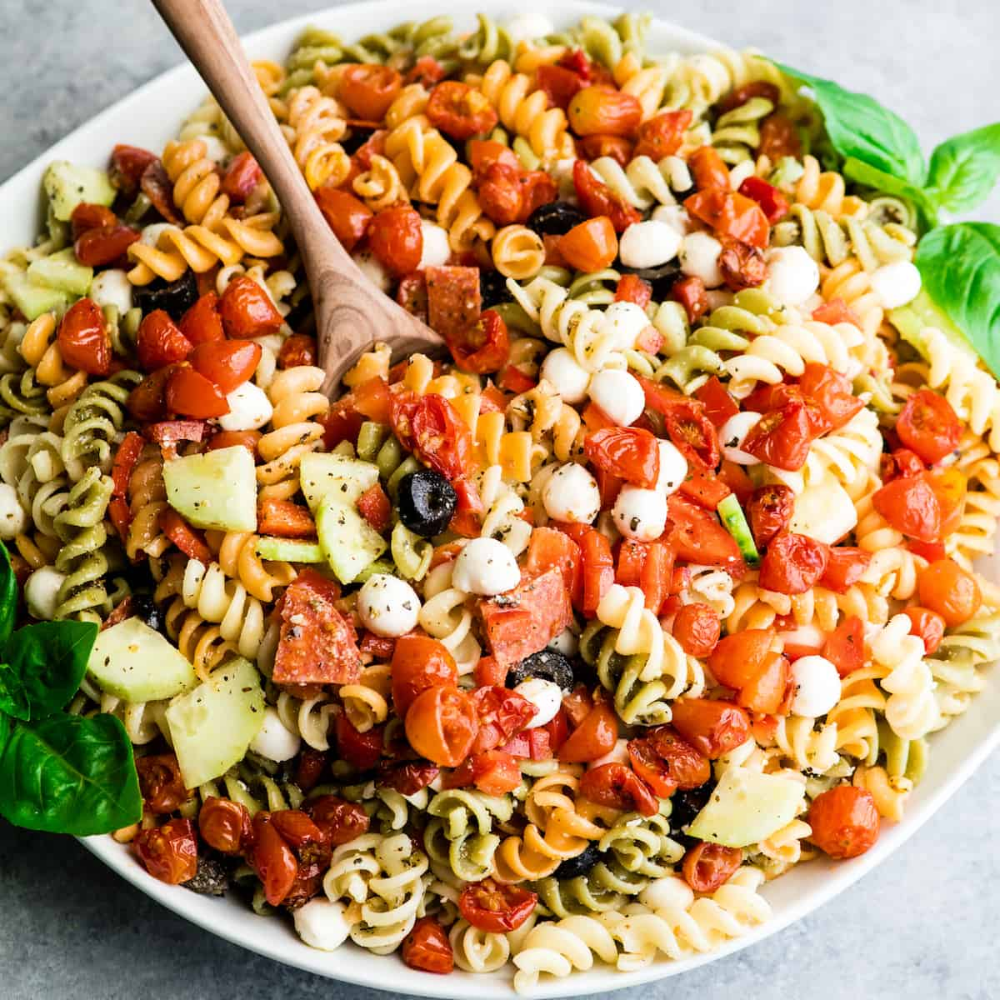
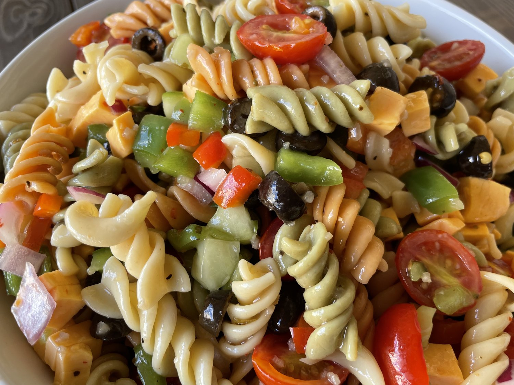

Pasta Salad

How to Make Pasta Salad
You'll find a detailed ingredient list and step-by-step instructions in the recipe below, but let's go over the basics:
Ingredients
Wondering what goes in pasta salad? These are the ingredients you’ll need:
- Pasta: This colorful, top-rated pasta salad starts with one pound of tri-colored spiral pasta.
- Dressing: Use a bottle of store-bought Italian-style dressing or, if you want to go the extra mile, make your own at home.
- Seasoning mix: Salad seasoning mix lends tons of savory flavor.
- Vegetables: You’ll need cherry tomatoes, three bell peppers (green, yellow, and red), and a can of black olives.
How to Make Homemade Pasta Salad
Here’s a brief overview of what you can expect when you make pasta salad at home:
- Step 1: Cook and drain the pasta.
- Step 2: Whisk the dressing with the seasoning mix.
- Step 3: Combine the pasta with the vegetables, then toss in the seasoned dressing.

Home Page